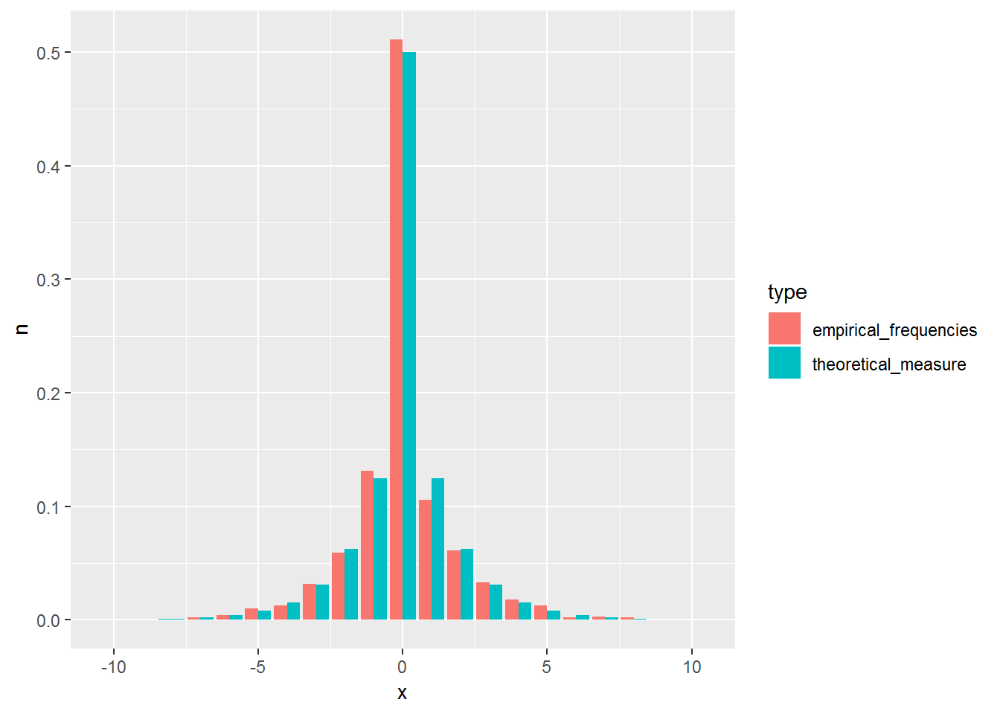
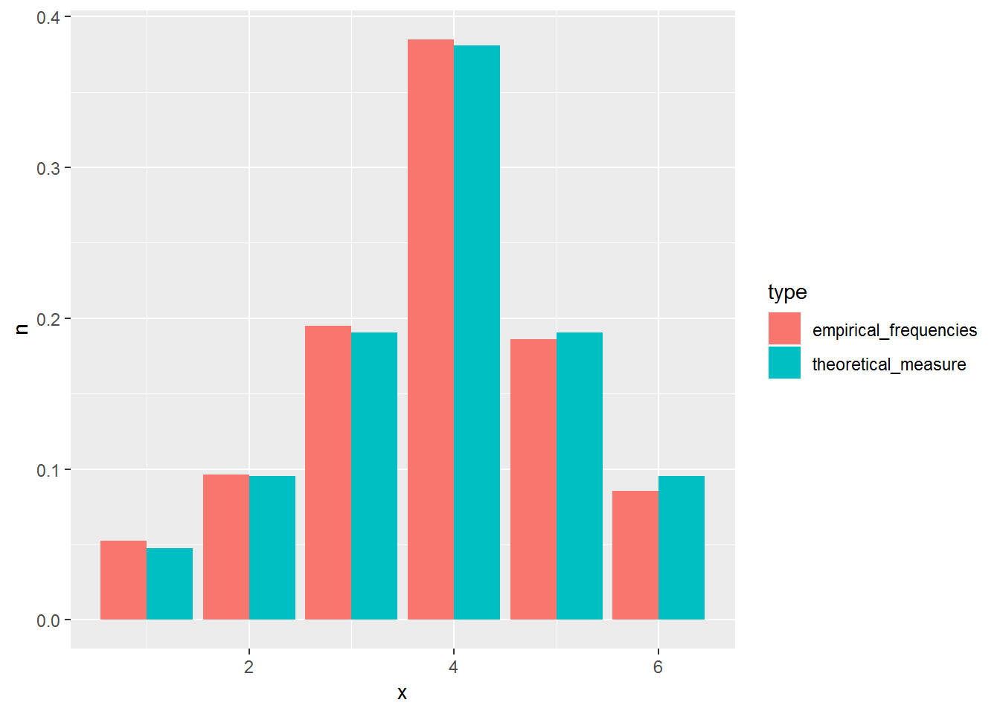

Chapter 1 Probability spaces
This chapter deals with measures and probability spaces. At the end of the chapter, we look more closely at discrete probability spaces.
The students are expected to acquire the following knowledge:
Theoretical
- Use properties of probability to calculate probabilities.
- Combinatorics.
- Understanding of continuity of probability.
R
- vectors
- for loop
- estimating probability with simulation
- sample function
- matrices
1.1 Measure and probability spaces
Exercise 1.1 (Completing a set to a Sigma algebra) Let \(\Omega = \{1,2,...,10\}\). Let \(A = [\{ \}, \{1\}, \{2\}, \Omega]\).
- Show that \(A\) is not a sigma algebra of \(\Omega\).
- Find the minimum number of elements to complete A to a sigma algebra of \(\Omega\).
Solution.
- \(1^c = \{2,3,...,10\} \notin A \implies\) \(A\) is not sigma algebra.
- First we need the complements of all elements, so we need to add sets \(\{2,3,...,10\}\) and \(\{1,3,4,...,10\}\). Next we need unions of all sets – we add the set \(\{1,2\}\). Again we need the complement of this set, so we add \(\{3,4,...,10\}\). So the minimum number of elements we need to add is 4.
Exercise 1.2 (Diversity of sigma algebras) Let \(\Omega\) be a set.
- Show that \(2^{\Omega}\) is a sigma algebra.
- Find the smallest sigma algebra of \(\Omega\).
- Find the largest Sigma algebra of \(\Omega\).
Solution.
- TODO
- \(A = \{\emptyset, \Omega\}\)
- \(2^{\Omega}\)
Exercise 1.3 Find all sigma algebras for \(\Omega = \{0, 1, 2\}\).
Solution.
- \(A = \{\emptyset, \Omega\}\)
- \(A = 2^{\Omega}\)
- \(A = \{\emptyset, \{0\}, \{1,2\}, \Omega\}\)
- \(A = \{\emptyset, \{1\}, \{0,2\}, \Omega\}\)
- \(A = \{\emptyset, \{2\}, \{0,1\}, \Omega\}\)
Exercise 1.4 (Difference between algebra and sigma algebra) Let \(\Omega = \mathbb{N}\) and \(\mathcal{A} = \{A \subseteq \mathbb{N}: A \text{ is finite or } A^c \text{ is finite.} \}\). Show that \(\mathcal{A}\) is an algebra but not a sigma algebra.
Solution. - \(\emptyset\) is finite so \(\emptyset \in \mathcal{A}\). - Let \(A \in \mathcal{A}\) and \(B \in \mathcal{A}\). If both are finite, then their union is also finite and therefore in \(\mathcal{A}\). Let at least one of them not be finite. Then their union is not finite. But \((A \cup B)^c = A^c \cap B^c\). And since at least one is infinite, then its complement is finite and the intersection is too. So finite unions are in \(\mathcal{A}\). - Let us look at numbers \(2n\). For any \(n\), \(2n \in \mathcal{A}\) as it is finite. But \(\bigcup_{k = 1}^{\infty} \in \mathcal{A}\).
Exercise 1.5 (Intro to measure) Take the measurable space \(\Omega = \{1,2\}\), \(F = 2^{\Omega}\). Which of the following is a measure? Which is a probability measure?
- \(\mu(\emptyset) = 0\), \(\mu(\{1\}) = 5\), \(\mu(\{2\}) = 6\), \(\mu(\{1,2\}) = 11\)
- \(\mu(\emptyset) = 0\), \(\mu(\{1\}) = 0\), \(\mu(\{2\}) = 0\), \(\mu(\{1,2\}) = 1\)
- \(\mu(\emptyset) = 0\), \(\mu(\{1\}) = 0\), \(\mu(\{2\}) = 0\), \(\mu(\{1,2\}) = 0\)
- \(\mu(\emptyset) = 0\), \(\mu(\{1\}) = 0\), \(\mu(\{2\}) = 1\), \(\mu(\{1,2\}) = 1\)
- \(\mu(\emptyset)=0\), \(\mu(\{1\})=0\), \(\mu(\{2\})=\infty\), \(\mu(\{1,2\})=\infty\)
Solution.
- Measure. Not probability measure since \(\mu(\Omega) > 1\).
- Neither due to countable additivity.
- Measure. Not probability measure since \(\mu(\Omega) = 0\).
- Probability measure.
- Measure. Not probability measure since \(\mu(\Omega) > 1\).
Exercise 1.6 Define a probability space that could be used to model a fair 6-sided die.
Solution.
- \(\Omega = \{1,2,3,4,5,6\}\)
- \(F = 2^{\Omega}\)
- \(\forall \omega \in \Omega\), \(P(\omega) = \frac{1}{6}\)
1.2 Properties of probability measures
Exercise 1.7 A standard deck (52 cards) is distributed to two persons: 26 cards to each person. All partitions are equally likely. Find the probability that:
- The first person gets 4 Queens.
- The first person gets at least 2 Queens.
- The first person gets at least 2 Queens and at least 2 Kings.
- R: Use simulation (sample) to check the above answers.
Solution.
- \(\frac{\binom{48}{22}}{\binom{52}{26}}\)
- For the simulation, let us represent cards with numbers from 1 to 52, and let 1 through 4 represent Queens, and 5 through 8 represent Kings.
set.seed(1)
cards <- 1:52
n <- 10000
q4 <- vector(mode = "logical", length = n)
q2 <- vector(mode = "logical", length = n)
q2k2 <- vector(mode = "logical", length = n)
for (i in 1:n) {
p1 <- sample(1:52, 26)
q4[i] <- sum(1:4 %in% p1) == 4
q2[i] <- sum(1:4 %in% p1) >= 2
q2k2[i] <- (sum(1:4 %in% p1) >= 2) & (sum(5:8 %in% p1) >= 2)
}
sum(q4) / n## [1] 0.0556sum(q2) / n## [1] 0.6995sum(q2k2) / n## [1] 0.4711Exercise 1.8 Let \(A\) and \(B\) be events with probabilities \(P(A) = \frac{2}{3}\) and \(P(B) = \frac{1}{2}\).
- Show that \(\frac{1}{6} \leq P(A\cap B) \leq \frac{1}{2}\), and give examples to show that both extremes are possible.
- Find corresponding bounds for \(P(A\cup B)\).
- R: Draw samples from the examples and show the probability bounds of \(P(A \cap B)\).
Solution. Smth
- From the properties of probability we have
\[\begin{equation} P(A \cup B) = P(A) + P(B) - P(A \cap B) \leq 1. \end{equation}\]
From this follows
\[\begin{align} P(A \cap B) &\geq P(A) + P(B) - 1 \\ &= \frac{2}{3} + \frac{1}{2} - 1 \\ &= \frac{1}{6}, \end{align}\]
which is the lower bound for the intersection. Conversely, we have
\[\begin{equation} P(A \cup B) = P(A) + P(B) - P(A \cap B) \geq P(A). \end{equation}\]
From this follows
\[\begin{align} P(A \cap B) &\leq P(B) \\ &= \frac{1}{2}, \end{align}\]
which is the upper bound for the intersection.
For an example take a fair die. To achieve the lower bound let \(A = \{1,2,3\}\) and \(B = \{3,4,5,6\}\), then their intersection is \(A \cap B = \{3\}\). To achieve the upper bound take \(A = \{1,2,3\}\) and \(B = \{1,2,3,4\}\).
- For the bounds of the union we will use the results from the first part. Again from the properties of probability we have
\[\begin{align} P(A \cup B) &= P(A) + P(B) - P(A \cap B) \\ &\geq P(A) + P(B) - \frac{1}{2} \\ &= \frac{2}{3}. \end{align}\]
Conversely
\[\begin{align} P(A \cup B) &= P(A) + P(B) - P(A \cap B) \\ &\leq P(A) + P(B) - \frac{1}{6} \\ &= 1. \end{align}\]
Therefore \(\frac{2}{3} \leq P(A \cup B) \leq 1\).
- We use sample in R:
set.seed(1)
n <- 10000
samps <- sample(1:6, n, replace = TRUE)
# lower bound
lb <- vector(mode = "logical", length = n)
A <- c(1,2,3)
B <- c(3,4,5,6)
for (i in 1:n) {
lb[i] <- samps[i] %in% A & samps[i] %in% B
}
sum(lb) / n## [1] 0.1724# upper bound
ub <- vector(mode = "logical", length = n)
A <- c(1,2,3)
B <- c(1,2,3,4)
for (i in 1:n) {
ub[i] <- samps[i] %in% A & samps[i] %in% B
}
sum(ub) / n## [1] 0.5047Solution. \[\begin{align} P(\text{no heads}) &= \lim_{n \rightarrow \infty} P(\text{no heads in first }n \text{ tosses}) \\ &= \lim_{n \rightarrow \infty} \frac{1}{2^n} \\ &= 0. \end{align}\]
For the second part, let us fix the given sequence of heads and tails of length \(k\) as \(s\). A probability that this happens in \(k\) tosses is \(\frac{1}{2^k}\).
\[\begin{align} P(s \text{ occurs}) &= \lim_{n \rightarrow \infty} P(s \text{ occurs in first } nk \text{ tosses}) \end{align}\]
The right part of the upper equation is greater than if \(s\) occurs eiter in the first \(k\) tosses, second \(k\) tosses,…, \(n\)-th \(k\) tosses. Therefore
\[\begin{align} P(s \text{ occurs}) &\geq \lim_{n \rightarrow \infty} P(s \text{ occurs in first } n \text{ disjoint sequences of length } k) \\ &= \lim_{n \rightarrow \infty} (1 - P(s \text{ does not occur in first } n \text{ disjoint sequences})) \\ &= 1 - \lim_{n \rightarrow \infty} P(s \text{ does not occur in first } n \text{ disjoint sequences}) \\ &= 1 - \lim_{n \rightarrow \infty} (1 - \frac{1}{2^k})^n \\ &= 1. \end{align}\]
Exercise 1.10
An Erdos-Renyi random graph \(G(n,p)\) is a model with n nodes, where each pair of nodes is connected with probability \(p\).
- Calculate the probability that there exists a node that is not connected to any other node in \(G(4,0.6)\).
- Show that the upper bound for the probability that there exist 2 nodes that are not connected to any other node for an arbitrary \(G(n,p)\) is \(\binom{n}{2} (1-p)^{2n - 3}\).
- R: Estimate the probability from the first point using simulation.
Solution.
- Let \(A_i\) be the event that the \(i\)-th node is not connected to any other node. Then our goal is to calculate \(P(\cup_{i=1}^n A_i)\). Using the inclusion-exclusion principle, we get
\[\begin{align} P(\cup_{i=1}^n A_i) &= \sum_i A_i - \sum_{i<j} P(A_i \cap A_j) + \sum_{i<j<k} P(A_i \cap A_j \cap A_k) - P(A_1 \cap A_2 \cap A_3 \cap A_4) \\ &=4 (1 - p)^3 - \binom{4}{2} (1 - p)^5 + \binom{4}{3} (1 - p)^6 - (1 - p)^6 \\ &\approx 0.21. \end{align}\]
- Let \(A_{ij}\) be the event that nodes \(i\) and \(j\) are not connected to any other node. We are interested in \(P(\cup_{i<j}A_{ij})\). By using Boole`s inequality, we get
\[\begin{align} P(\cup_{i<j}A_{ij}) \leq \sum_{i<j} P(A_{ij}). \end{align}\]
What is the probability of \(A_{ij}\)? There need to be no connections to the \(i\)-th node to the remaining nodes (excluding \(j\)), the same for the \(j\)-th node, and there can be no connection between them. Therefore
\[\begin{align} P(\cup_{i<j}A_{ij}) &\leq \sum_{i<j} (1 - p)^{2(n-2) + 1} \\ &= \binom{n}{2} (1 - p)^{2n - 3}. \end{align}\]
set.seed(1)
n_samp <- 100000
n <- 4
p <- 0.6
conn_samp <- vector(mode = "logical", length = n_samp)
for (i in 1:n_samp) {
tmp_mat <- matrix(data = 0, nrow = n, ncol = n)
samp_conn <- sample(c(0,1),
choose(4,2),
replace = TRUE,
prob = c(1 - p, p))
tmp_mat[lower.tri(tmp_mat)] <- samp_conn
tmp_mat[upper.tri(tmp_mat)] <- t(tmp_mat)[upper.tri(t(tmp_mat))]
not_conn <- apply(tmp_mat, 1, sum)
if (any(not_conn == 0)) {
conn_samp[i] <- TRUE
} else {
conn_samp[i] <- FALSE
}
}
sum(conn_samp) / n_samp## [1] 0.205651.3 Discrete probability spaces
Exercise 1.11 Show that the standard measurable space on $= {0,1,…,n} equipped with binomial measure is a discrete probability space.
- Define another probability measure on this measurable space.
- Show that for \(n=1\) the binomial measure is the same as the bernoulli measure.
- R: Draw 1000 samples from the binomial distribution \(p=0.5\), \(n=20\) (rbinom) and compare relative frequencies with theoretical probability measure.
Solution. We need to show that the terms of \(\sum_{k=0}^n \binom{n}{k} p^k (1 - p)^{n - k}\) sum to 1. For that we use the binomial theorem \(\sum_{k=0}^n \binom{n}{k} x^k y^{n-k} = (x + y)^n\). So
\[\begin{equation} \sum_{k=0}^n \binom{n}{k} p^k (1 - p)^{n - k} = (p + 1 - p)^n = 1. \end{equation}\]
- \(P(\{k\}) = \frac{1}{n + 1}\).
- When \(n=1\) then \(k \in \{0,1\}\). Inserting \(n=1\) into the binomial measure, we get \(\binom{1}{k}p^k (1-p)^{1 - k}\). Now \(\binom{1}{1} = \binom{1}{0} = 1\), so the measure is \(p^k (1-p)^{1 - k}\), which is the Bernoulli measure.
set.seed(1)
library(ggplot2)
library(dplyr)
bin_samp <- rbinom(n = 1000, size = 20, prob = 0.5)
bin_samp <- data.frame(x = bin_samp) %>%
count(x) %>%
mutate(n = n / 1000, type = "empirical_frequencies") %>%
bind_rows(data.frame(x = 0:20, n = dbinom(0:20, size = 20, prob = 0.5), type = "theoretical_measure"))
bin_plot <- ggplot(data = bin_samp, aes(x = x, y = n, fill = type)) +
geom_bar(stat="identity", position = "dodge")
plot(bin_plot)
Exercise 1.12 Show that the standard measurable space on \(\Omega = \{0,1,...,\infty\}\)
- equipped with geometric measure is a discrete probability space.
- equipped with Poisson measure is a discrete probability space.
- Define another probability measure on this measurable space.
- R: Draw 1000 samples from the Poisson distribution \(\lambda = 10\) (rpois) and compare relative frequencies with theoretical probability measure.
Solution.
\(\sum_{k = 0}^{\infty} p(1 - p)^k = p \sum_{k = 0}^{\infty} (1 - p)^k = p \frac{1}{1 - 1 + p} = 1\). We used the formula for geometric series.
\(\sum_{k = 0}^{\infty} \frac{\lambda^k e^{-\lambda}}{k!} = e^{-\lambda} \sum_{k = 0}^{\infty} \frac{\lambda^k}{k!} = e^{-\lambda} e^{\lambda} = 1.\) We used the Taylor expansion of the exponential function.
TODO Since we only have to define a probability measure, we could only assign probabilities that sum to one to a finite number of events in \(\Omega\), and probability zero to the other infinite number of events. However to make this solution more educational, we will try to find a measure that assigns a non-zero probability to all events in \(\Omega\). A good start for this would be to find a converging infinite series, as the probabilities will have to sum to one. One simple converging series is the geometric series \(\sum_{k=0}^n p^k\) for \(|p| < 1\). Let us choose an arbitrary \(p = 0.5\). Then \(\sum_{k=0}^n p^k = \frac{1}{1 - 0.5} = 2\). To complete the measure, we have to normalize it, so it sums to one, therefore \(P(\{k\}) = \frac{0.5^k}{2}\) is a probability measure on \(\Omega\).
We could make it even more difficult by making this measure dependent on some parameter \(\alpha\), but this is out of the scope of this introductory chapter.
set.seed(1)
pois_samp <- rpois(n = 1000, lambda = 10)
pois_samp <- data.frame(x = pois_samp) %>%
count(x) %>%
mutate(n = n / 1000, type = "empirical_frequencies") %>%
bind_rows(data.frame(x = 0:25, n = dpois(0:25, lambda = 10), type = "theoretical_measure"))
pois_plot <- ggplot(data = pois_samp, aes(x = x, y = n, fill = type)) +
geom_bar(stat="identity", position = "dodge")
plot(pois_plot)
Exercise 1.13 Define a probability measure on \((\Omega = \mathbb{Z}, 2^{\mathbb{Z}})\).
- Define a probability measure such that \(P(\omega) > 0, \forall \omega \in \Omega\).
- R: Implement a random generator that will generate samples with the relative frequency that corresponds to your probability measure. compare relative frequencies with theoretical probability measure .
Solution.
\(P(0) = 1, P(\omega) = 0, \forall \omega \neq 0\).
\(P(\{k\}) = \sum_{k = -\infty}^{\infty} \frac{p(1 - p)^{|k|}}{2^{1 - 1_0(k)}}\), where \(1_0(k)\) is the indicator function, which equals to one if \(k\) is 0, and equals to zero in every other case.
n <- 1000
geom_samps <- rgeom(n, prob = 0.5)
sign_samps <- sample(c(FALSE, TRUE), size = n, replace = TRUE)
geom_samps[sign_samps] <- -geom_samps[sign_samps]
my_pmf <- function (k, p) {
indic <- rep(1, length(k))
indic[k == 0] <- 0
return ((p * (1 - p)^(abs(k))) / 2^indic)
}
geom_samps <- data.frame(x = geom_samps) %>%
count(x) %>%
mutate(n = n / 1000, type = "empirical_frequencies") %>%
bind_rows(data.frame(x = -10:10, n = my_pmf(-10:10, 0.5), type = "theoretical_measure"))
geom_plot <- ggplot(data = geom_samps, aes(x = x, y = n, fill = type)) +
geom_bar(stat="identity", position = "dodge")
plot(geom_plot)
Exercise 1.14 Define a probability measure on \(\Omega = \{1,2,3,4,5,6\}\) with parameter \(m \in \{1,2,3,4,5,6\}\), so that the probability of outcome at distance \(1\) from \(m\) is half of the probability at distance \(0\), at distance \(2\) is half of the probability at distance \(1\), etc. R: Implement a random generator that will generate samples with the relative frequency that corresponds to your probability measure. compare relative frequencies with theoretical probability measure .
Solution.
\(P(\{k\}) = \frac{\frac{1}{2}^{|m - k|}}{\sum_{i=1}^6 \frac{1}{2}^{|m - i|}}\)
n <- 10000
m <- 4
my_pmf <- function (k, m) {
denom <- sum(0.5^abs(m - 1:6))
return (0.5^abs(m - k) / denom)
}
samps <- c()
for (i in 1:n) {
a <- sample(1:6, 1)
a_val <- my_pmf(a, m)
prob <- runif(1)
if (prob < a_val) {
samps <- c(samps, a)
}
}
samps <- data.frame(x = samps) %>%
count(x) %>%
mutate(n = n / length(samps), type = "empirical_frequencies") %>%
bind_rows(data.frame(x = 1:6, n = my_pmf(1:6, m), type = "theoretical_measure"))
my_plot <- ggplot(data = samps, aes(x = x, y = n, fill = type)) +
geom_bar(stat="identity", position = "dodge")
plot(my_plot)